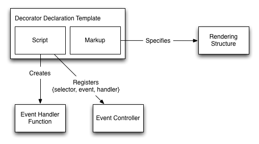

This document is a non-normative reference, which provides an overview of Web Components. It summarizes the normative information in the respective specifications in easy-to-digest prose with illustrations.
Status of this Document
This section describes the status of this document at the time of its publication. Other documents may supersede this document. A list of current W3C publications and the latest revision of this technical report can be found in the W3C technical reports index at http://www.w3.org/TR/.
Publication as a Working Draft does not imply endorsement by the W3C Membership. This is a draft document and may be updated, replaced or obsoleted by other documents at any time. It is inappropriate to cite this document as other than work in progress.
This document was produced by a group operating under the 5 February 2004 W3C Patent Policy. This document is informative only. W3C maintains a public list of any patent disclosures made in connection with the deliverables of the group; that page also includes instructions for disclosing a patent. An individual who has actual knowledge of a patent which the individual believes contains Essential Claim(s) must disclose the information in accordance with section 6 of the W3C Patent Policy.
As mentioned earlier, this document is a work in progress. It relates all concepts associated with Web Components into one coherent, non-normative narrative.
Each concept is separately being refined and developed in a normative document.
This is an iterative process.
What is described here may sometimes lag behind the normative documents, and may sometimes be pointing the way ahead for those documents. Once all of the forward-looking information is extracted into the respective normative documents, this document will undergo an ultimate update to accurately summarize the information in the normative documents.
2 Introduction
The component model for the Web ("Web Components") consists of five pieces:
Templates, which define chunks of markup that are inert but can be activated for use later.
Decorators, which apply templates based on CSS selectors to affect rich visual and behavioral changes to documents.
Custom Elements, which let authors define their own elements, with new tag names and new script interfaces.
Shadow DOM, which encapsulates a DOM subtree for more reliable composition of user interface elements.
Imports, which defines how templates, decorators and custom elements are packaged and loaded as a resource.
Each of these pieces is useful individually. When used in combination, Web Components enable Web application authors to define widgets with a level of visual richness and interactivity not possible with CSS alone, and ease of composition and reuse not possible with script libraries today.
This document discusses each of these pieces. Each section builds on the last to illustrate how authors can use the pieces of Web Components in combination.
The <template> element contains markup intended to be used later. The content of the <template> element is parsed by the parser, but it is inert: scripts aren't processed, images aren't downloaded, and so on. The <template> element is not rendered.
The <template> element has property called content which holds the content of the template in a document fragment. When the author wants to use the the content they can move or copy the nodes from this property:
Because what is contained in the template is not in the document, but in the content document fragment, appending a copy of the template content in this way makes it "live" so scripts run and images are fetched at this point. For example, templates can be used to store large scripts inline in the document, but not incur the cost of parsing them until they are needed.
4 Decorators
Decorators, unlike other parts of Web Components, do not have a specification yet. One concept for Decorators that could be pursued is sketched in this section. There is no normative description of this part of Web Components.
A decorator is something that enhances or overrides the presentation of an existing element. Like all presentation aspects, the application of decorators is controlled by CSS. However, being able to specify the extra presentation using markup is unique to decorators.
The <decorator> element contains a <template> element, which specifies the markup to use for rendering the decoration.
Even though the decorator CSS property can point to any resource on the Web, the decorator will not be applied unless its definition is loaded by this document. The markup that generates the presentation is limited to be purely presentational: it may never run script (including inline event handlers) and it cannot be editable.
4.1 Events in Decorators
Decorators can also attach event handlers to implement interactivity.
Because the decorators are transient, it is not useful for the decorator to attach event listeners to the nodes in the template or rely on any state, since it perishes any time the decorator is applied or unapplied. Instead, decorator events are mediated by an event controller.

Fig. Event handler registration
To register an event listener with an event controller, the template includes a <script> element. The script is run once when the decorator element is inserted into the document, or loaded as part of an external document. The script must evaluate to an array of registrations:
<decoratorid="details-open"><script>function clicked(event){
event.target.removeAttribute('open');}[{selector:'#summary', type:'click', handler: clicked}];</script><template><aid="summary"><!-- as illustrated above -->
The event controller interprets the array and routes events originating in any of the places that the decorator is applied to the event handler.
Fig. Event routing and retargeting
When the event listener is called, the target of the event is the content that the decorator was applied to, not content from the template. In the above example, clicks on the ▾ (which is defined in the template) are delivered to the clicked function (which is registered to the #summary element, also defined in the template) but the event.target property refers to the decorated <details> element. This retargeting is necessary because the decorator specifies presentation; it does not affect the DOM structure of the document.
By removing the open attribute, this decorator will no longer apply because the selector with the decorator property no longer matches. The decorator is unapplied, returning the rendering of the element back to the pre-decoration state. However the author could write a second decorator to affect a "closed" rendering and in this way implement stateless interactivity simply by triggering different decorators:
This uses two decorators. One presents the details view closed; the other presents the details view open. Each decorator uses an event handler to respond to clicks by toggling the open state of the element. The content element's select attribute will be explained in detail later.
Custom elements are new types of DOM elements that can be defined by authors. Unlike decorators, which are stateless and ephemeral, custom elements can encapsulate state and provide script interfaces. The following table summarizes the key differences between decorators and custom elements.
Decorators
Custom Elements
Lifetime
Ephemeral, while a CSS selector matches
Stable, matches entire element lifetime
Applied, unapplied dynamically
Yes, based on CSS selectors
No, fixed at element creation time
Accessible through script
No, transparent to DOM; cannot add interfaces
Yes, accessible through DOM; can provide interfaces
State
Stateless projection
Stateful DOM object
Behavior
Simulated by changing decorators
First-class using script and events
5.1 Defining a Custom Element
The <element> element defines a custom element. It specifies the type of element it's a refinement of using the extends attribute:
The extends attribute specifies the tag name of the kind of element this element is an extension of. Instances of the custom element will have the tag name specified here.
The name attribute specifies the name of the custom element, by which it will be referred to in markup. These names must include a hyphen.
Because not all user agents support custom elements, authors should extend the HTML element that has the closest meaning to their new kind of element. For example, if they are defining a custom element that is interactive and responds to clicks by doing some action, they should extend button.
When there isn't a HTML element that is semantically close to their custom element, authors can omit the extends attribute. These elements will use the value of the name attribute as a tag name. For this reason, these kinds of elements are called custom tags. A user agent that does not support custom elements will treat this as the semantically undifferentiated HTMLUnknownElement.
5.2 Methods and Properties
You can define a custom element's script API by putting methods and properties on the custom element's prototype object using a nested <script> element:
The properties of the last value of the script will be copied to a prototype object created for you. In the above example, <tick-tock-clock> elements will have a tick method.
5.3 Lifecycle Callbacks
Custom elements have lifecycle callbacks which can be used to set up presentational aspects of a custom element. These are: readyCallback, which is called after a custom element is created; insertedCallback, which is called after a custom element is inserted into a document; and removedCallback, which is called after a custom element is removed from a document.
The following example demonstrates using a template, shadow DOM (described in detail below), and lifecycle callbacks to create a working clock element:
Because custom elements use existing HTML tag names—div, button, option, and so on—we need to use an attribute to specify when an author intends to use a custom element. The attribute name is is, and its value is the name of a custom element. For example:
<buttonis="fancy-button"><!-- use -->
Do something fancy
</button>
5.5 Using Custom Elements in Script
As an alternative to the <element> element, you can also register custom elements from script using the register method. In this case you can set up the element's methods and properties by manipulating the prototype object directly. register returns a function that can be called to create an instance of the custom element:
var p =Object.create(HTMLButtonElement.prototype,{});
p.dazzle =function(){…};varFancyButton= document.register('button','fancy-button',{prototype: p});var b =newFancyButton();
document.body.appendChild(b);
b.addEventListener('click',function(event){event.target.dazzle();});
Custom elements defined either using <element> or register can be instantiated from script using the standard createElement method:
var b = document.createElement('button','fancy-button');
alert(b.outerHTML);// will display '<button is="fancy-button"></button>'var c = document.createElement('tick-tock-clock');
alert(c.outerHTML);// will display '<tick-tock-clock></tick-tock-clock>'
5.6 Element Upgrade
As the definition of a custom element is loaded, each element that matches the definition is upgraded. The upgrade process updates the prototype of the element, which makes the element's API available to script, and invokes lifecycle callbacks.
You can avoid the flash of unstyled content by using the CSS :unresolved pseudoclass. This pseudoclass will match any custom element that does not have a definition available yet:
<style>
tick-tock-clock:unresolved {
content:'??:??';}</style><tick-tock-clock></tick-tock-clock><!-- will show ??:?? -->
This pseudoclass can also be used by script to avoid interacting with elements that have not been upgraded yet:
// Chime ALL the clocks!Array.prototype.forEach.call(
document.querySelectorAll('tick-tock-clock:not(:unresolved)'),function(clock){ clock.chime();});
An element that wants to notify other parts of the page that it has been upgraded could dispatch a custom event to do so. Scripts that want to delay interacting with the element until it has been upgraded can listen to this event.
5.7 Extending Custom Elements
In addition to HTML elements, you can also extend a custom element by specifying the custom element's name as the value of the extends attribute in the <element> element, or by setting up a prototype chain that includes another custom element prototype:
<elementextends="tick-tock-clock"name="grand-father-clock">
…
</element><script>var p =Object.create(Object.getPrototypeOf(document.createElement('tick-tock-clock')));
p.popOutBirdie =function(){…}varCuckooClock= document.register('cuckoo-clock',{prototype: p});var c =newCuckooClock();
c.tick();// inherited from tick-tock-clock
c.popOutBirdie();// specific to cuckoo-clock</script>
Shadow DOM is an adjunct tree of DOM nodes. These shadow DOM subtrees can be associated with an element, but do not appear as child nodes of the element. Instead the subtrees form their own scope. For example, a shadow DOM subtree can contain IDs and styles that overlap with IDs and styles in the document, but because the shadow DOM subtree (unlike the child node list) is separate from the document, the IDs and styles in the shadow DOM subtree do not clash with those in the document.
Shadow DOM can be applied to an element by calling the createShadowRoot method. This returns a ShadowRoot node which can then be populated with DOM nodes.
An element with shadow DOM is called a shadow host. When an element has shadow DOM, the element's children are not rendered; the content of the shadow DOM is rendered instead.
6.1 Insertion Points
A shadow DOM subtree can use a <content> element to specify an insertion point in the rendered output. The host's children are displayed at the insertion point. The <content> element acts as an insertion point for rendering only—it does not change where the elements appear in DOM.
You can have more than one insertion point in the shadow DOM subtree! The select attribute lets you choose which children appear at which insertion point, as illustrated in the details-open decorator example:
Insertion points let you reordered or selectively omit rendering the host's children, but they will not cause something to be rendered multiple times. Tree order dictates when each of these elements takes a pass at selecting the children. Once the child is selected to be rendered at one insertion point, it can't be claimed by another one, which is why the details-open decorator only renders the summary once.
6.2 Reprojection
Elements in a shadow DOM subtree may have shadow roots of their own. When this happens, the insertion points of the nested shadow DOM subtree act on the nodes in the outer shadow DOM subtree's insertion points, as this example illustrates:
<!-- document --><divid="news"><h1>Good day for kittens</h1><divclass="breaking">Kitten rescued from tree</div><div>Area kitten "adorable"—owner</div><divclass="breaking">Jiggled piece of yarn derails kitten kongress</div></div><!-- #news' shadow --><templateid="t"><contentselect="h1"></content><divid="ticker"><contentid="stories"></content></div></template><!-- #ticker's shadow --><templateid="u"><contentclass="highlight"select=".breaking"></content><content></content></template><script>// Set up shadow DOMvar news = document.querySelector('#news');var r = news.webkitCreateShadowRoot();var t = document.querySelector('#t');
r.appendChild(t.content.cloneNode(true));var ticker = r.querySelector('#ticker');var s = ticker.webkitCreateShadowRoot();var u = document.querySelector('#u');
s.appendChild(u.content.cloneNode(true));</script>
Conceptually, first the document and the first shadow root is combined to create the following virtual DOM tree. The insertion points have been erased and the host element's child nodes appear in their place.
<divid="news"><h1>Good day for kittens</h1><divid="ticker"><divclass="breaking">Kitten rescued from tree</div><div>Area kitten "adorable"—owner</div><divclass="breaking">Jiggled piece of yarn derails kitten kongress</div></div></div>
Next, this intermediate virtual tree is combined with the second shadow root to create another virtual DOM tree. All of the breaking news is now at the top. This is because of the <content class="highlight" select=".breaking"> insertion point. Note that the elements are reordered despite the fact that the breaking class does not appear in the #ticker element's children, because insertion points pick from the intermediate virtual tree. Projecting a node through multiple insertion points in this way is called reprojection.
<divid="news"><h1>Good day for kittens</h1><divid="ticker"><divclass="breaking">Kitten rescued from tree</div><divclass="breaking">Jiggled piece of yarn derails kitten kongress</div><div>Area kitten "adorable"—owner</div></div></div>
6.3 Fallback Content
An insertion point may have content. This is called fallback content because it is only displayed if nothing is distributed to an insertion point. For example, the news ticker shadow DOM could be modified to display default text if no heading and/or stories are available:
<!-- #news' shadow --><templateid="t"><contentselect="h1">Today's top headlines</content><divid="ticker"><contentid="stories">No news
<buttononclick="window.location.reload(true);">Reload</button></content></div></template>
6.4 Multiple Shadow Subtrees
Any element can have more than one shadow DOM subtree. Don't look so puzzled! In fact, this is common when you are extending a custom element that already has a shadow DOM subtree. What happens to that poor old tree? We could just ditch it for the new arboreal hotness, but what if you don't want to? What if you want reuse it?
There is another kind of insertion point for this purpose: the <shadow> element, which pulls in the previously applied shadow DOM subtree (also known as the older tree). For example, here is a custom element which extends the <tick-tock-clock> element and adds a direction indicator to it:
Since an element can have multiple shadows, we need to understand how these shadows interact with each other and what effect these interactions have on rendering of the element's children.
First, the order in which the shadow DOM subtrees are applied is important. Because you cannot remove a shadow root, the order is:
User agent shadow DOM (I got here first, nyah!)
The base custom element's shadow DOM.
The first derived custom element's shadow DOM.
…
Ad-hoc shadow DOM added using script.
Decorator shadow (applied and removed with CSS rules—not technically shadow DOM, but its insertion points work similarly to shadow DOM.)
Next, we take this stack of shadow DOM subtrees and traverse it backwards, starting with the last-applied (or youngest) subtree. Each <content> insertion point, encountered in tree order, grabs the host element's children that it needs as usual.
This is where things get interesting. Once we're done shuffling the children into their right places to render, we check and see if we have a <shadow> element. If we don't, we're done.
If we do, we plop the next shadow subtree in our list in place of the <shadow> element, and rinse-repeat first replacing <content> insertion points, then the first <shadow>, until we reach the end of the stack.
And then—ta-da!—we have our wondrous shadow DOM Yggdrasil, ready for rendering.
Here's an easy way to remember how this works:
The most recently applied shadow DOM subtree has the best shot of getting fresh children for its <content> insertion points.
Once it's had its way, the next most recent shadow DOM subtree—if even allowed to—can rummage through the remaining children.
Cycle repeats until either the current shadow DOM subtree has no <shadow> element, or we've processed the oldest DOM subtree for this element.
6.5 CSS and Shadow DOM
When building a custom element it is natural to think about its markup (attributes and content) and script interface. It is often just as important to think about how it interacts with the styles in the page. Shadow DOM gives authors a lot of control over how content in shadow DOM interacts with styles.
The shadow DOM subtree is surrounded by an invisible boundary, which by default applies user agent styles but not author styles. However inheritance still works as usual. This is usually what you want: In the <sailing-watch> example above, if the page is styled so that the surrounding text is a beautiful sea green, in keeping with a nautical theme, the text inside the shadow DOM (for example the "N" of the direction indicator) will be sea green too because color is an inherited property. But if the author has styled all <div> elements to have orange borders, the direction indicator will not have an orange border because the border properties are not inherited properties.
A shadow root has two properties to control this behavior. The first, applyAuthorStyles, will apply the author stylesheet. Setting this property is appropriate when writing shadow DOM that should match the appearance of the surrounding content as closely as possible. There is one caveat: CSS selectors are matched against the shadow DOM subtree, not the flattened tree. Pay attention to child, descendant, sibling and "nth-of-x" selectors when using this property.
The second shadow root property which controls the effect of surrounding styles on content in a shadow DOM subtree is resetStyleInheritance. If this property is set to trueall properties are reset to initial values at the shadow boundary.
If applyAuthorStyles is false and set resetStyleInheritance is true, you're back to a clean slate. Your element is insulated from the styles in the page—even inherited properties—and you can use a browser reset stylesheet to build up the exact style you want.
There is a similar boundary at an insertion point. The styles from the shadow DOM subtree do not apply to the host element's children distributed into an insertion point. However some insertion points, particularly ones with very specific selectors and purpose, need to style the distributed content. Shadow DOM specifies a ::distributed pseudo-selector for this purpose. To elaborate the news example:
This contains two rules which use ::distributed. The left half of the selector applies to the shadow DOM subtree; the part of the selector in parentheses applies to elements distributed to those insertion points. So the first content::distributed(*) selector applies to all elements distributed to <content> insertion points; while the second *::distributed(.breaking) selector applies to all elements with class breaking distributed to insertion points, giving them a healthy maroon glow. Given this specific shadow DOM the author could reduce redundancy by writing this selector .highlight::distributed(*) instead.
Shadow DOM can also style its host element. It is natural for a custom element's shadow DOM to style the host because it is the outermost part of a widget. For example, to make the ticker to be a scrolling display instead of a static one, we can style it in an @host @-rule:
Lastly, there are two ways to permit the page to style content in a shadow DOM subtree in a controlled way. The first exposes a specific element in the shadow DOM subtree by assigning it a pseudo ID. Author styles can then refer to it as a pseudo-element. For example, the outer "news" shadow DOM may want to let the author style the ticker part of the news display. It does this by setting the pseudo property. Author styles can then address that part of the widget:
<script>// Set up shadow DOM…var ticker = r.querySelector('#ticker');ticker.pseudo ='x-ticker';…</script><!-- change the appearance of the ticker part --><style>#news::x-ticker {
background: gray;
color: lightblue;}</style>
The other way to let the page selectively style content in the shadow DOM subtree is to use CSS Variables. For example, instead of hardcoding orange with maroon tint, we could encode a pair of highlight colors:
<!-- #ticker's shadow --><templateid="u"><style>@host{:scope {
white-space: nowrap;
overflow-style: marquee-line;
overflow-x: marquee;}}
content::distributed(*){
display:inline-block;}*::distributed(.breaking){
text-shadow:000.2emvar(highlight-accent, maroon);
color:var(highlight-primary, orange);}</style><contentclass="highlight"select=".breaking"></content><content></content></template><!-- change the appearance of the ticker part --><style>#news::x-ticker {
background: gray;
color: lightblue;var-highlight-primary: green;var-highlight-accent: yellow;}</style>
A pseudo-element is useful for opening up all of the properties of a specific element for styling by the author. CSS Variables are useful for letting the author style a narrow set of properties, but ones that are specified repetitively such as the colors in a theme.
6.6 Events in Shadow DOM
To ensure that the elements of the shadow DOM subtree are not exposed outside of the subtree, there's a fair bit of work that happens while dispatching an event from inside of the subtree.
First, some events (like mutation and selectstart events) are just plain prevented from escaping out of the shadow DOM subtree—they are never heard from the outside.
Those events that do cross the shadow DOM boundary are retargeted—their target and relatedTarget values are modified to point to the element that hosts the shadow DOM subtree.
In some cases, like DOMFocusIn, mouseover, mouseout events have to be given extra attention: if you're moving a mouse between two elements inside of the shadow subtree, you don't want to be spamming the document with these events, since they will appear as non-sensical babbling after the retargeting. (What? the element just reported that the mouse just moved from itself back to itself?!)
Custom elements and decorators can be loaded from external files using the link tag:
<linkrel="import"href="goodies.html">
Only <decorator> elements and <element> elements are interpreted by the user agent, although the DOM of this document is available to script through the import property. Documents which are retrieved cross-origin use CORs to determine that the definitions are designed to run cross-site.
Appendix A. Interfaces and Elements
This section provides an index of interfaces and elements defined
by Web Components, with links to their normative definitions.
Thanks to Alex Komoroske, Alex Russell, Darin Fisher, Dirk Pranke, Divya Manian, Erik Arvidsson, Hayato Ito, Hajime Morita, Ian Hickson, Jonas Sicking, Rafael Weinstein, Roland Steiner, and Tab Atkins for their comments and contributions to this document.